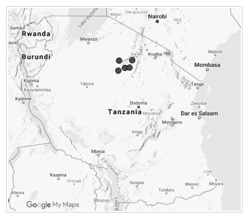
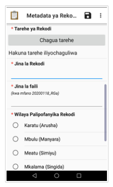

RAIL 2020Tafsiri ya mashine
Kuhamasisha Metadata: Open Data Kit (ODK) kwa ajili ya Uendelezaji wa Rasilimali za Lugha katika Afrika Mashariki
Tafsiri ya mashine, haijakaguliwa na binadamu. Makala asili ndiyo toleo la rejeo; sentensi zilizopigiwa mstari ni zile ambazo ukaguzi wa kiotomatiki haukuwa na uhakika nazo.
Proceedings of the first workshop on Resources for African Indigenous Languages.
Tafsiri ya Ernst van Gassen (Arktos AI Lab), yenye leseni CC BY-NC 4.0 kama makala asili. Matumizi tena yanaruhusiwa kwa kutaja mwandishi, kwa matumizi yasiyo ya kibiashara tu. Waandishi asili hawajakagua wala kuidhinisha tafsiri hii.
Maandishi matupu ya kutumia tena, pamoja na leseni yake: Kiswahili · LESENI
Taasisi
Richard T. Griscom
Leiden University
Van Wijkplaats 4, 2311 BX Leiden, Netherlands
Anwani za barua pepe zimeondolewa kwa sababu za faragha. Zinapatikana katika PDF asilia.
Muhtasari
Watafiti wa lugha za uwandani hukusanya na kuhifadhi metadata kama sehemu ya rasilimali za lugha (LRs) wanazounda, lakini mara nyingi hufanya kazi katika mazingira yenye ukomo wa rasilimali yanayowazuia kutumia kompyuta kwa ajili ya kuingiza data. Katika hali kama hizo, wanaisimu lazima wakamilishe kazi za uwekaji kidijitali zinazochukua muda mrefu na zenye kukabiliwa na makosa ambazo zinapunguza wingi na ubora wa rasilimali na metadata wanazozalisha (Thieberger & Berez 2012; Margetts & Margetts 2012). Makala hii inaelezea mbinu ya kuingiza metadata ya lugha katika vifaa vya mkononi kwa kutumia jukwaa la Open Data Kit (ODK), seti ya zana za chanzo wazi zilizoundwa kwa ajili ya ukusanyaji wa data za mkononi. Mbinu hii ilijumuishwa katika miradi miwili ya ukusanyaji wa nyaraka za lugha za jamii nchini Tanzania, ambayo ilihusisha watafiti kumi na wawili waliokusanya data kwa wakati mmoja katika mikoa minne ya utawala (Griscom & Harvey 2019). Kupitia utambuzi wa utegemezi na urudufu wa data mahususi kwa mradi, idadi kadhaa ya ufanisi ilijengwa ndani ya mfumo wa kuingiza metadata. Hizi ni pamoja na matumizi ya maneno yaliyofungwa, fomu za kipekee za kuingia data kwa makundi tofauti ya wakusanyaji wa data, na fomu tofauti za kuingia metadata ya mshiriki na rasilimali. Mfumo uliopatikana unatumika kama msingi wa uendelezaji unaoendelea wa zana za kuingiza metadata za lugha mbili za Kiingereza-Kiswahili za madhumuni ya jumla, zitakazopatikana kwa matumizi ya watafiti wengine wanaofanya kazi katika Afrika Mashariki.
Maneno Muhimu
metadata, rasilimali za lugha, Afrika
1. Utangulizi
Kukusanya data za lugha ili kuunga mkono uundaji wa LR kwa lugha za kienyeji za Afrika mara nyingi huhusisha kufanya kazi na jamii katika maeneo ambako upatikanaji wa umeme na mtandao wa intaneti kwa kawaida huenda ukawa na mipaka. Vikwazo hivi vya rasilimali mara nyingi husababisha wakusanyaji wa data kutumia mbinu za karatasi ambazo huzalisha data zisizo za kidijiti ambazo lazima baadaye zibadilike kuwa za kidijiti. Uwekaji wa kidijitali unachukua muda na unaweza kuingiza makosa ya ziada kwenye data, kwa hivyo mbinu inayondoa uwekaji wa kidijitali kutoka kwenye mtiririko wa kazi ina faida maalum (Thieberger & Berez 2012: 92; Margetts & Margetts 2012: 16). Mbinu na zana zilizoelezwa katika makala hii huwawezesha wakusanyaji data, wakifanya kazi kibinafsi au kwa timu, kuunda metadata tajiri za kidijitali katika maeneo ya mbali bila hitaji la kompyuta au muunganisho wa intaneti wakati wa uundaji wa metadata.
1.1 Kuhamasisha Metadata za Rasilimali za Lugha
Metadata za ubora wa juu ni muhimu kwa ugunduzi wa rasilimali (Good 2002), lakini pia kwa kujibu maswali ya utafiti yanayohusisha taarifa za nje ya kiisimu (Kendall 2008; Kendall 2011). Kuna viwango mbalimbali vya metadata kwa ajili ya LRs, ikiwa ni pamoja na Text Encoding Initiative (TEI), ISLE Meta Data Initiative (IMDI), na Component MetaData Infrastructure (CMDI), miongoni mwa wengine. Pia kuna zana nyingi za uundaji wa metadata za lugha zinazopatikana sasa, kama vile ProFormA2, Arbil, COMEDI, na CMDI-Maker (Fallucchi, Steffen & De Luca 2019). Zana zote za kuunda metadata zinazopatikana kwa sasa zinahitaji kompyuta au muunganisho thabiti wa intaneti ili kufanya kazi vizuri.
Haja ya mfumo mpya wa kidijitali wa kuingiza metadata ambao hautegemei kompyuta au muunganisho thabiti wa intaneti inazidishwa wakati ukusanyaji wa data unapokuwa kwa kiwango kikubwa na kufanywa na watafiti wengi wanaofanya kazi kwa wakati mmoja katika maeneo tofauti. Haya ndiyo masharti halisi ya miradi miwili iliyoratibiwa na inayojikita katika jamii ya kuweka kumbukumbu za lugha kaskazini mwa Tanzania, inayofadhiliwa na Endangered Languages Documentation Programme (ELDP): "Gorwaa, Hadza, and Ihanzu: Grammatical Inquiries in the Tanzanian Rift" (IFP0285) na "Documenting Hadza: language contact and variation" (IPF0304). Pamoja, miradi hii ya miaka miwili inahusisha ushiriki wa watafiti 10 wa ndani kutoka jamii za Ihanzu na Hadza, waliosambazwa katika vituo vitano katika Bonde la Ziwa Eyasi, pamoja na watafiti wawili wakuu (PIs). Kielelezo cha 1 kinaonyesha ramani ya Tanzania ikiwa na eneo la kila moja ya vituo vitano vya utafiti vikiwa vimetiwa alama kwa nukta (Google 2020a).

Kielelezo 1: Ramani ya vituo vya utafiti kwa kiwango cha kitaifa
Kwa kuwa kila mmoja wa watafiti 12 anatarajiwa kutoa metadata mpya kila wiki kwa kipindi kinachozidi mwaka mmoja wa kalenda, kukusanya na kuweka metadata za karatasi katika mfumo wa kidijitali haikuwa chaguo la busara. Sehemu kubwa ya ukusanyaji wa data kwa ajili ya miradi hiyo miwili hufanyika katika maeneo yasiyo na umeme au intaneti, kwa hivyo zana za kawaida za kidijitali za kuunda metadata hazingeweza kutumika pia. Njia mpya ya kuingiza metadata kwa simu ya mkononi ilihitajika.
2. Open Data Kit
ODK ni jukwaa la programu huria na ya chanzo wazi kwa ajili ya kukusanya na kudhibiti data katika mazingira yenye vikwazo vya rasilimali, na inajumuisha programu tatu kuu zinazohusiana na ukusanyaji wa metadata ya lugha: ODK Build, programu ya wavuti ya kuunda fomu maalum za kuingiza data kulingana na kiwango cha XForm, ODK Aggregate, programu ya seva ya Java ya kuhifadhi, kuchambua, na kuhamisha data ya fomu, na ODK Collect, programu ya Android inayoruhusu kuingiza data moja kwa moja kwenye vifaa vya simu. Pamoja na vipengele hivi vitatu vinavyofanya kazi pamoja, timu za watafiti zinaweza kukusanya data kwa haraka na kwa wakati mmoja katika maeneo ya mbali, na data zao zote zinaweza kukusanywa pamoja kwenye seva moja. Kielelezo cha 2 kinaonyesha mchoro wa mtiririko wa kazi wakati wa ukusanyaji wa data: wakusanyaji data wanapakia data zao kwenye seva ya ODK Aggregate kutoka kwenye vifaa vyao vya mkononi, na kisha mkaguzi wa data anakusanya data na kuzisafirisha kutoka kwenye seva kwa ajili ya uchambuzi.

Picha 2: Mchoro wa mchakato wa ukusanyaji data wa ODK
Vigezo vifuatavyo vilizingatiwa kuwa muhimu kwa mfumo wenye mafanikio wa kuingiza metadata: kuondolewa kwa uwekaji kidijitali kutoka kwenye mtiririko wa kazi wa kuunda metadata, uwezo wa kupanuka ili mfumo uweze kutumiwa na timu za wakusanyaji data wanaofanya kazi kwa kujitegemea na kwa wakati mmoja, matumizi ya teknolojia ya simu ili kuwezesha uundaji wa metadata katika maeneo yasiyo na umeme, na jukwaa la programu huria linalofanya mbinu hiyo iweze kufikiwa na jamii ya watafiti.
Open Data Kit (ODK) suite ilichaguliwa kama jukwaa la msingi kwa ajili ya ukusanyaji wa metadata kwa sababu inatimiza vigezo vyote vilivyotajwa hapo juu. Pia ina faida za ziada, ikiwa ni pamoja na rekodi iliyothibitishwa kama jukwaa la ukusanyaji wa data miongoni mwa mashirika yasiyo ya kiserikali na mashirika yasiyo ya faida yanayofanya kazi Afrika, msaada wa fomu za uingizaji wa data kwa lugha nyingi, na ukusanyaji wa data za jiografia.
3. Njia ya Metadata ya Lugha ya ODK
Mfumo wa kuingiza metadata ya ODK ulioundwa kwa ajili ya miradi ya nyaraka za lugha za jamii ya Hadza na Ihanzu ulibuniwa na kujaribiwa kwa kipindi cha miezi michache kabla ya utekelezaji. Mbinu hiyo ilibuniwa kuwa sahihi na yenye ufanisi iwezekanavyo kutokana na mahitaji mahususi ya miradi ya utafiti, na baadaye maelezo mahususi ya mfumo yalitumika kama msingi wa uundaji wa zana za madhumuni ya jumla.
3.1 Kutambua Mahitaji ya Metadata
Hatua ya kwanza katika kuendeleza zana au mbinu mpya ni utambuzi wa thamani za utafiti na mahitaji (Good 2010). Kwa ajili ya miradi ya nyaraka za lugha nchini Tanzania, mahitaji yetu yalikuwa metadata zinazokidhi mahitaji ya muundo na maudhui ya Endangered Languages Archive (ELAR), hazina ambapo data za mradi zitahifadhiwa, na metadata zinazoruhusu uchambuzi wa tofauti na mawasiliano ya lugha, ambayo ni lengo la programu ya utafiti.
Amana za kumbukumbu za miradi ya ELDP zinazopangishwa kwenye ELAR hutumia wasifu wa metadata unaojumuisha vipengele vya metadata ya amana, kifurushi, rasilimali, na mshiriki (Duin et al. 2019). Kwa jumla, amana tatu zilitayarishwa kwa miradi miwili ya ELDP: moja kwa ajili ya Ihanzu na mbili kwa ajili ya Hadza. Hivyo, mbinu ilihitajika ya kubainisha amana sahihi kwa kila kifurushi. Vifurushi katika ELAR hutumika kuweka pamoja aina tofauti za rasilimali na washiriki, kwa hiyo tulihitaji pia mbinu ambayo ingewezesha upangaji huu na kuainisha kwa usahihi rasilimali na washiriki. Aina tofauti za rasilimali ni pamoja na rekodi za sauti na video, pamoja na data ya maandishi kama vile nakala na tafsiri. Aina mbili za washiriki zinajumuisha watafiti na wasemaji.
Metadata zinazohitajika kwa ajili ya utafiti wa tofauti za lugha na mawasiliano ni pamoja na metadata za rasilimali kama vile aina ya usemi, mwingiliano, na eneo la kitendo cha usemi, pamoja na metadata za washiriki kama vile umri, jinsia, historia ya elimu, eneo na historia ya eneo, na historia ya lugha. Kwa hiyo, fomu zozote za kuingizia data zilizotengenezwa kwa ajili ya miradi ya Hadza na Ihanzu zitahitaji kujumuisha maeneo ya kuingizia aina hizi za metadata, na taarifa zitahitaji kusindika kwa njia ambayo inaweza kupatikana kwa urahisi.
3.2 Uundaji wa Fomu za Kuingiza metadata
Mara tu metadata iliyotakikana ilipotambuliwa, fomu za kuingiza metadata ziliundwa kwa kutumia ODK Build. Ufanisi kadhaa ulijengwa ndani ya mfumo wa kuingiza metadata kupitia utambuzi wa utegemezi na urudufu wa data mahususi kwa mradi. Ufanisi huu ulijumuisha matumizi ya kamusi zilizofungwa, seti za kipekee za fomu kwa makundi tofauti ya wakusanyaji wa data, na mgawanyiko wa rasilimali na fomu za washiriki.
3.2.1 Msamiati Funge na Seti za Fomu
Ingawa vipengele vingi katika wasifu wa metadata wa ELAR havizuiliwi kwa seti funge ya thamani zinazowezekana, ndani ya muktadha wa mradi wa utafiti thamani ya vipengele vingi huwa thabiti (k.m. lugha lengwa, mradi) au imezuiliwa kwa seti funge (k.m. mtafiti, vifaa vilivyotumika). Kwa hiyo, mfumo wa uundaji wa metadata uliobinafsishwa kwa mradi maalum unaweza kujumuisha thamani hizi zisizobadilika na misamiati funge ili kuongeza kasi na usahihi. Badala ya kuunda fomu moja ya kuingiza metadata kwa wakusanyaji data wote, ambayo ingejumuisha seti za msamiati funge zenye maingizo ambayo hayakuwa muhimu kwa baadhi ya wakusanyaji data, tuliunda seti tatu za fomu: seti moja kwa kila mmoja wa wachunguzi wakuu, watafiti wa ndani wa Kihadza, na watafiti wa ndani wa Kiihanzu.
Kwa kuunda seti tatu tofauti za fomu za kuingiza metadata, tulikuwa na uwezo wa kuzuia seti zilizofungwa kuwa na thamani pekee ambazo zilikuwa chaguzi zinazowezekana kwa kila aina ya mkusanyaji wa data. Hii ilipunguza uwezekano wa makosa ya kategoria ya kuingiza data na kufanya fomu kuwa rahisi kutumia kwa kuwa na chaguo chache za kuchagua.
3.2.2 Metadata ya Kikao na Mzungumzaji
Wazungumzaji mara nyingi hushiriki katika uundaji wa rekodi nyingi, lakini metadata ya mshiriki hukusanywa mara moja tu. Kwa sababu hii, fomu mbili tofauti ziliundwa kwa ajili ya metadata ya rasilimali na metadata ya mshiriki. Hii ilipunguza urudufu wa data wakati wa hatua ya ukusanyaji wa data, lakini pia ilileta hitaji la usindikaji wa data baada ya ukusanyaji (tazama Sehemu ya 3.4).
3.2.3 Aina za uwanja na utaratibu
Aina mbalimbali za wijeti za kuingiza ziliunganishwa katika fomu za ODK, kulingana na aina ya metadata itakayokusanywa. Vidude vya maandishi wazi vilitumika kwa metadata ambazo hazizuiliwi kwa msamiati funge, kama vile majina ya washiriki na maeneo. Vidude vya chaguo moja vilitumika kwa kategoria za metadata zinazounda seti funge za thamani zinazotengana, kama vile jinsia ya mshiriki au jina la mtafiti anayekusanya data. Vidude vya chaguo nyingi vilitumika kwa kategoria za metadata zinazojumuisha seti funge za thamani zisizotengana, kama vile lugha zinazozungumzwa na mshiriki. Widgets za tarehe zilitumika kwa metadata kama vile tarehe ya kurekodi na mwaka wa kuzaliwa wa mshiriki, widget ya GPS ilitumika kupata data ya kijiografia kwa ajili ya eneo la kurekodi, na widget ya picha ilitumika kwa ajili ya kutengeneza picha za washiriki kwa madhumuni ya kutambua.

Kielelezo 3: Fomu ya kuingiza metadata ya kipindi cha kurekodi
Kielelezo 3 kinaonyesha picha ya skrini ya mojawapo ya fomu za ODK zinazotumiwa na watafiti wa ndani. Widjeti ya "Tarehe ya Rekodi" ni widjeti ya tarehe inayotumika kuchagua tarehe ya rekodi, widjeti za "Jina la Rekodi" na "Jina la Faili" ni widjeti za maandishi wazi za kuingiza majina ya rekodi na faili, na widjeti ya "Wilaya Palipoganyika Rekodi" ni widjeti ya chaguo moja ya kuchagua wilaya ambapo rekodi ilifanywa. Nyota nyekundu karibu na jina la kila widgeti inaonyesha kwamba inahitajika, na watumiaji wanahitaji kukamilisha widgeti hizi kabla ya kuendelea na sehemu nyingine ya fomu.
3.3 Kuweka Mfumo wa ODK
Uwekaji wa vipengele vya kifaa cha simu na seva za mfumo wa ODK ulikuwa rahisi na haukuhitaji ujuzi wa kiufundi mkubwa. Seva ya ODK Aggregate ilitayarishwa kwa kufuata maelekezo ya hatua kwa hatua kwenye tovuti ya ODK (ODK 2017) FreeDNS ilitumika kupangisha seva bila gharama, na Google Cloud Platform ilitumika kuunda seva pepe (Google 2020b). Kwa sababu ya kiasi kidogo cha data, seva pepe ndogo na kiendeshi vilionekana kutosha (g1-small virtual machine na 30 GB standard persistent disk).
ODK Collect iliwekwa kwenye simu tano za mkononi za Android, zilizonunuliwa ndani ya Tanzania. Kila simu ilipewa jina la mtumiaji la kipekee linalotambulisha timu inayotumia kifaa kukusanya metadata. Maelezo ya ufikiaji kwa seva ya ODK Aggregate yalihifadhiwa katika mipangilio ya kila simu na seti inayofaa ya fomu za kuingia metadata kwa kila simu ilipakuliwa. Nenosiri la msimamizi liliwekwa kwenye kila simu ili baadhi ya chaguo, kama vile kufuta na kupakua fomu mpya, zisipatikane kwa watafiti wa ndani.
ODK inakuja imepakia tayari na msaada wa lugha nyingi za kiolesura. Kwa watafiti wa ndani nchini Tanzania, tuliweka kiolesura kionyeshwe kwa Kiswahili, lingua franca ya Afrika Mashariki. Zaidi ya hayo, tulibuni fomu hizo zionekane kwa Kiingereza au Kiswahili, na tukaweka lugha chaguomsingi ya fomu hizo kuwa Kiswahili kwa vifaa vya watafiti wa ndani.

Picha ya 4: Watafiti wa mahali hapo hufanya mazoezi kwa kutumia ODK (Picha ya Nadia Jassim)
Wakati wa warsha ya siku tano ya mafunzo ya nyaraka za lugha, watafiti wote wa ndani walipewa maelekezo juu ya matumizi ya ODK kwa ajili ya uundaji wa metadata. Watafiti wa ndani walifanya mazoezi ya kuingiza data, kuhifadhi fomu, na kupakia kwenye seva ya Aggregate. Wakati wa mafunzo yenyewe, marekebisho madogo yalifanywa kwenye fomu, ikiwa ni pamoja na kupanga upya na kubadilisha maneno ya maswali, kulingana na maoni kutoka kwa watafiti wa ndani. Baada ya mafunzo, na mara tu ukusanyaji wa data ulipoanzishwa, marekebisho machache ya ziada yalifanywa kwenye fomu. Kwa mfano, swali la ziada liliongezwa kwenye fomu za metadata za kipindi cha kurekodi kwa watafiti wa ndani na Wakuu wa Utafiti (PIs) ili kuunda jina la faili la kipekee kwa kila rekodi, ambalo linajumuisha tarehe ya kurekodi katika muundo wa ISO (YYYYMMDD), msimbo wa herufi mbili kwa mtafiti aliyeunda rekodi hiyo, na mfumo wa kialfabeti wa kupanga rekodi kulingana na mpangilio zilivyoundwa. Majina haya ya faili hutumika kwa faili zote za rasilimali zinazohusiana na rekodi husika. Baada ya watafiti wa ndani kukumbwa na matatizo ya mara kwa mara katika usimamizi wa data, iliamuliwa kuwa kuongeza swali la jina la faili kungefanya iwe rahisi kwao kuunganisha faili za rasilimali baada ya ukusanyaji wa data. Ziara za kufuatilia katika vituo vya utafiti zilitoa fursa za kuendelea kutoa maoni juu ya ukusanyaji wa metadata. Masuala ya kawaida yalijumuisha kutopatana katika tahajia ya majina ya washiriki na kutoelewana kuhusu maelezo ya kiisimu-jumla kama vile mwingiliano na aina ya usemi,. Kosa la mara kwa mara mwanzoni lilikuwa ni kusahau tu kuingiza metadata, ama kwa rasilimali au kwa mshiriki.
3.4 Usindikaji wa Metadata
Kupitia njia iliyoelezwa hapa, metadata huingizwa kwenye vifaa vya mkononi na kisha kupakiwa kwenye seva ya ODK Aggregate. Data kutoka kwa seva hiyo inaweza kisha kusafirishwa kama faili ya thamani iliyotenganishwa kwa koma (.CSV), au kusambazwa moja kwa moja hadi Google Sheets. Mawasilisho yote ya fomu kila moja yanaweza kutolewa pamoja. Ili kuzalisha faili za metadata katika muundo unaofaa kwa ajili ya kuhifadhi na ELAR, data kutoka kwenye faili za CSV za fomu za metadata ya washiriki na rasilimali zinahitaji kuunganishwa pamoja. Hati ya Python iliundwa ili kuzalisha faili za mwisho za metadata kwa kila kifurushi kitakachowekwa katika ELAR. Kifurushi ni kikundi cha rasilimali na washiriki wanaohusiana. Hati hiyo inakusanya taarifa kutoka kwa metadata ya rasilimali na mshiriki na kutambua aina za faili za rasilimali zinazohusiana na kila kikao cha kurekodi ili kuunda kifurushi kinachoweza kuwekwa katika ELAR. Kwa mfano, ikiwa ingizo fulani katika metadata ya rasilimali linabainisha kwamba washiriki-wazungumzaji wawili walihusika katika uundaji wa rekodi, basi hati hiyo hutumia majina ya washiriki katika metadata ya rasilimali kutoa metadata ya ziada kwa washiriki-wazungumzaji hao wawili kutoka kwa maingizo yao yanayolingana katika metadata ya mshiriki, na kisha hati hiyo huunda faili ya metadata iliyofungwa kwa kutumia taarifa iliyotolewa.
4. Njia ya Tathmini
Malengo yanayoshindana ya kufikia wingi wa data uwakilishi na ufikiaji wa data, ambayo kwa pamoja yanaelezewa na baadhi ya watu kama "mgogoro wa urudiaji wa matokeo" (Gezelter 2015), yanaweza kushughulikiwa ndani ya kikoa cha utafiti wa lugha kwa angalau njia mbili: ushiriki hai wa jamii ya wazungumzaji katika ukusanyaji wa data ("crowd-sourcing"), na matumizi ya kimkakati ya teknolojia za kikompyuta ("automation"). Njia ya metadata ya lugha ya ODK inajaribu kutumia suluhisho zote mbili, na ina faida kadhaa za kushangaza ikilinganishwa na njia za kuingiza data zisizo za kidijitali. Mbinu hiyo ina uwezo wa kuongeza ubora, wingi, na uthabiti wa data za kiisimu na metadata zinazowekwa kwenye kumbukumbu za lugha. Inafanya hivyo si tu kwa kupunguza vikwazo vya uchakataji, ambavyo huwawezesha wanaisimu kutumia muda mwingi zaidi kuchanganua au kukusanya data wakati ambapo vinginevyo wangekuwa wakibadilisha data kuwa za kidijitali kwa mikono, bali pia kwa kufungua mlango wa ushiriki ulioongezeka wa jamii za wazungumzaji katika mchakato wa uhifadhi wa lugha, ambao umeonyeshwa kunufaisha matokeo ya utafiti kwa kuzalisha seti za data za kiisimu ambazo ni tofauti zaidi na uwakilishi zaidi (Czaykowska-Higgins 2009). Hata hivyo, mfumo huo haukosi vikwazo vyake. Kama ilivyo kwa mfumo wowote wa kuingiza metadata, sehemu za maandishi huria bado zitakuwa na makosa ambayo lazima yakaguliwe ama kwa mikono au kupitia mfumo wa kiotomatiki wa aina fulani. Mafunzo ya ziada na maoni yanaweza kupunguza kiwango cha makosa, lakini si ya maana kutarajia metadata bila makosa na mfumo wowote unaotumia uwanja wa maandishi wazi. Mawasilisho ya matoleo yaliyosasishwa ya fomu yanahitaji kukusanywa kwa mikono pamoja na mawasilisho ya matoleo ya awali, angalau katika toleo la sasa la programu ya ODK Aggregate. Umuhimu wa kazi hii unategemea kiasi na wakati wa sasisho zilizofanywa kwenye fomu. Ikiwa fomu zinawasilishwa kupitia ODK Collect kwa kutumia toleo la awali ambalo tayari limefutwa kutoka kwenye kifaa, basi fomu hizo haziwezi tena kutazamwa ndani ya kifaa hicho. Tena, umuhimu wa kikwazo hiki unategemea kiasi na wakati wa sasisho. Pengine kizuizi kikubwa zaidi, hata hivyo, ni kwamba matokeo ya programu ya ODK lazima yaundwe kulingana na wasifu wa metadata wa hifadhi ya lugha husika. Hili linahitaji uandikaji wa msimbo na kwa hiyo linapunguza kundi la watafiti wanaoweza kubuni utekelezaji mahususi wa mradi kwa wale wenye ujuzi wa uandikaji wa msimbo au wanaoweza kufikia mtu mwenye ujuzi huo.
5. Kuelekea Mfumo Sanifu
Njia moja ya kupunguza ugumu wa kujifunza mfumo wa metadata wa ODK ni kuunda seti ya fomu sanifu za madhumuni ya jumla, zikiegemezwa kwenye wasifu mmoja au zaidi ya metadata ya kawaida, na hati ya usindikaji inayoambatana. Miradi ya ukusanyaji wa nyaraka za lugha za jamii za Hadza na Ihanzu nchini Tanzania sasa inatumika kama msingi wa kuunda seti ya zana kama hizo. Hapo awali, zana hizi zitategemea wasifu wa metadata wa ELAR na zitadhibitiwa kwa violesura vya Kiingereza na Kiswahili, jambo ambalo linapaswa kuwa na manufaa kwa watafiti wanaofanya kazi na jamii za lugha zilizo hatarini kutoweka katika Afrika Mashariki. Katika siku zijazo, mpango ni kueneza zana hizi ili kujumuisha kiolesura cha Kifaransa na profaili za metadata kwa hifadhi nyingine za lugha za kawaida na hazina za data.
6. Hitimisho
Mfumo wa metadata ya lugha ya ODK unatoa faida kadhaa ikilinganishwa na mbinu za kuingia data kwa mikono. Kuondolewa kwa uwekaji dijiti na matumizi ya msamiati funge huongeza Usahihi na kasi ya uingizaji wa metadata. Hii ni muhimu kwa sababu inaruhusu uundaji wa seti kubwa na zinazowakilisha data, ambazo ni lengo kuu la nyaraka za lugha (Himmelmann 1998; Himmelmann 2006; Woodbury 2003). Uwezo wa kupanuka wa mfumo wa ODK pia unaruhusu timu za wakusanyaji data kufanya kazi pamoja, jambo ambalo linaweza kuruhusu ongezeko la ushirikishwaji wa jamii na ushirikiano.
Mfumo uliobuniwa hasa kwa ajili ya miradi ya nyaraka za lugha za jamii ya Hadza na Ihanzu unategemea istilahi zilizofungwa na thamani thabiti maalum kwa mradi na hifadhidata, lakini sifa hizi maalum zinaelekeza muundo wa zana za kuingiza metadata za matumizi ya jumla. Inatumainiwa kwamba zana hizi zitafanya uwezekano wa uundaji wa metadata ya kidijitali kuwa ukweli kwa watafiti wanaofanya kazi katika maeneo ya mbali ya Afrika.
Shukrani
Utafiti ulioripotiwa katika makala hii unafadhiliwa na Endangered Languages Documentation Programme (ELDP, IPF0304) na Leiden University Centre for Digital Humanities (LUCDH).
7. Marejeo
Czaykowska-Higgins, Ewa. 2009. Research Models, Community Engagement, and Linguistic Fieldwork: Reflections on Working within Canadian Indigenous Communities. Language Documentation and Conservation 3(1). 15-50.
Duin, Patrick, Twan Goosen, Mitchell Seaton, Olha Shkaravska, George Georgovassilis & Jean-Charles Ferrieres. 2019. CMDI Component Registry. CLARIN. https://catalog.clarin.eu/ds/ComponentRegistry/#/.
Fallucchi, Francesca, Hennicke Steffen & Ernesto William De Luca. 2019. Creating CMDI-Profiles for Textbook Resources. In Emmanouel Garoufallou, Fabio Sartori, Rania Siatri & Marios Zervas (eds.), Metadata and Semantic Research, vol. 846,302-314. Cham: Springer International Publishing. doi:10.1007/978-3-030-14401-2_28. http://link.springer.com/10.1007/978-3-030-14401-2_28 (13 February, 2020).
Gezelter, Daniel J. 2015. Open Source and Open Data Should Be Standard Practices. The journal of physical chemistry letters 6(7). 1168-1169.
Good, Jeff. 2002. A Gentle Introduction to Metadata. http://www.language-archives.org/documents/gentle-intro.html.
Good, Jeff. 2010. Valuing technology: Finding the linguist's place in a new technological universe. Language Documentation, Practice and values. Amsterdam: John Benjamins.
Google. 2020. Google Cloud Platform. https://cloud.google.com.
Griscom, Richard T. & Andrew Harvey. 2019. Gorwaa, Hadza, and Ihanzu: Language contact, variation, and grammatical inquiries in the Tanzanian Rift. Presented at the East Africa Day Leiden, Leiden. https://doi.org/10.5281/zenodo.3509475.
Himmelmann, Nikolaus P. 1998. Documentary and descriptive linguistics. Linguistics 36. 161-195.
Himmelmann, Nikolaus P. 2006. Language documentation: What is it and what is it good for? In Jost Gippert, Nikolaus P. Himmelmann & Ulrike Mosel (eds.), Essentials of Language Documentation. Berlin: Mouton de Gruyter.
Kendall, Tyler. 2008. On the History and Future of Sociolinguistic Data. Language and Linguistics Compass 2(2). 332-351. doi:10.1111/j.1749-818X.2008.00051.x.
Kendall, Tyler. 2011. Corpora from a sociolinguistic perspective. Revista Brasileira de Linguística Aplicada 11(2). 361-389. doi:10.1590/S1984-63982011000200005.
Margetts, Anna & Andrew Margetts. 2012. Audio and video recording techniques for linguistic research. The Oxford Handbook of Linguistic Fieldwork. Oxford University Press.
ODK. 2017. Getting Started With ODK. https://docs.opendatakit.org/getting-started/#install-aggregate-optional.
Thieberger, Nicholas & Andrea L. Berez. 2012. Linguistic Data Management. The Oxford Handbook of Linguistic Fieldwork. Oxford University Press.
Woodbury, Anthony C. 2003. Defining Documentary Linguistics. Language Documentation and Description, vol. 1. London: Hans Rausing Endangered Languages Project.
English na Kiswahili
Mobilizing Metadata: Open Data Kit (ODK) for Language Resource Development in East Africa
Kuhamasisha Metadata: Open Data Kit (ODK) kwa ajili ya Uendelezaji wa Rasilimali za Lugha katika Afrika Mashariki
Affiliations
Richard T. Griscom
Leiden University
Van Wijkplaats 4, 2311 BX Leiden, Netherlands
Taasisi
Richard T. Griscom
Leiden University
Van Wijkplaats 4, 2311 BX Leiden, Netherlands
Abstract
Muhtasari
Linguistic fieldworkers collect and archive metadata as part of the language resources (LRs) that they create, but they often work in resource-constrained environments that prevent them from using computers for data entry. In such situations, linguists must complete time-consuming and error-prone digitization tasks that limit the quantity and quality of the resources and metadata that they produce (Thieberger & Berez 2012; Margetts & Margetts 2012). This paper describes a method for entering linguistic metadata into mobile devices using the Open Data Kit (ODK) platform, a suite of open source tools designed for mobile data collection. The method was incorporated into two community-based language documentation projects in Tanzania, involving twelve researchers simultaneously collecting data in four administrative regions (Griscom & Harvey 2019). Through the identification of project-specific data dependencies and redundancies, a number of efficiencies were built into the metadata entry system. These include the use of closed vocabularies, unique data entry forms for distinct data collector categories, and separate forms for entering participant and resource metadata. The resulting system serves as the basis for the ongoing development of general purpose bilingual English-Swahili metadata entry tools, to be made available for use by other researchers working in East Africa.
Watafiti wa lugha za uwandani hukusanya na kuhifadhi metadata kama sehemu ya rasilimali za lugha (LRs) wanazounda, lakini mara nyingi hufanya kazi katika mazingira yenye ukomo wa rasilimali yanayowazuia kutumia kompyuta kwa ajili ya kuingiza data. Katika hali kama hizo, wanaisimu lazima wakamilishe kazi za uwekaji kidijitali zinazochukua muda mrefu na zenye kukabiliwa na makosa ambazo zinapunguza wingi na ubora wa rasilimali na metadata wanazozalisha (Thieberger & Berez 2012; Margetts & Margetts 2012). Makala hii inaelezea mbinu ya kuingiza metadata ya lugha katika vifaa vya mkononi kwa kutumia jukwaa la Open Data Kit (ODK), seti ya zana za chanzo wazi zilizoundwa kwa ajili ya ukusanyaji wa data za mkononi. Mbinu hii ilijumuishwa katika miradi miwili ya ukusanyaji wa nyaraka za lugha za jamii nchini Tanzania, ambayo ilihusisha watafiti kumi na wawili waliokusanya data kwa wakati mmoja katika mikoa minne ya utawala (Griscom & Harvey 2019). Kupitia utambuzi wa utegemezi na urudufu wa data mahususi kwa mradi, idadi kadhaa ya ufanisi ilijengwa ndani ya mfumo wa kuingiza metadata. Hizi ni pamoja na matumizi ya maneno yaliyofungwa, fomu za kipekee za kuingia data kwa makundi tofauti ya wakusanyaji wa data, na fomu tofauti za kuingia metadata ya mshiriki na rasilimali. Mfumo uliopatikana unatumika kama msingi wa uendelezaji unaoendelea wa zana za kuingiza metadata za lugha mbili za Kiingereza-Kiswahili za madhumuni ya jumla, zitakazopatikana kwa matumizi ya watafiti wengine wanaofanya kazi katika Afrika Mashariki.
Keywords
Maneno Muhimu
metadata, language resources, Africa
metadata, rasilimali za lugha, Afrika
1. Introduction
1. Utangulizi
Collecting linguistic data to support the creation of LRs for indigenous African languages often involves working with communities in areas where regular access to electricity and internet may be limited. These resource restrictions often lead data collectors to utilize paper-based methods that produce non-digital data which must then later be digitized. Digitization is time-consuming and can introduce additional errors to data, so a method that removes digitization from the workflow has distinct advantages (Thieberger & Berez 2012: 92; Margetts & Margetts 2012: 16). The methods and tools described in this paper enable data collectors, working individually or in teams, to create rich digital metadata in remote regions without the need for a computer or internet connection at the time of metadata creation.
Kukusanya data za lugha ili kuunga mkono uundaji wa LR kwa lugha za kienyeji za Afrika mara nyingi huhusisha kufanya kazi na jamii katika maeneo ambako upatikanaji wa umeme na mtandao wa intaneti kwa kawaida huenda ukawa na mipaka. Vikwazo hivi vya rasilimali mara nyingi husababisha wakusanyaji wa data kutumia mbinu za karatasi ambazo huzalisha data zisizo za kidijiti ambazo lazima baadaye zibadilike kuwa za kidijiti. Uwekaji wa kidijitali unachukua muda na unaweza kuingiza makosa ya ziada kwenye data, kwa hivyo mbinu inayondoa uwekaji wa kidijitali kutoka kwenye mtiririko wa kazi ina faida maalum (Thieberger & Berez 2012: 92; Margetts & Margetts 2012: 16). Mbinu na zana zilizoelezwa katika makala hii huwawezesha wakusanyaji data, wakifanya kazi kibinafsi au kwa timu, kuunda metadata tajiri za kidijitali katika maeneo ya mbali bila hitaji la kompyuta au muunganisho wa intaneti wakati wa uundaji wa metadata.
1.1 Mobilizing Language Resource Metadata
1.1 Kuhamasisha Metadata za Rasilimali za Lugha
High quality metadata are crucial for resource discovery (Good 2002), but also for answering research questions that involve extra-linguistic information (Kendall 2008; Kendall 2011). Various metadata standards exist for LRs, including Text Encoding Initiative (TEI), ISLE Meta Data Initiative (IMDI), and Component MetaData Infrastructure (CMDI), among others. There are also multiple linguistic metadata creation tools currently available, such as ProFormA2, Arbil, COMEDI, and CMDI-Maker (Fallucchi, Steffen & De Luca 2019). All metadata creation tools currently available require either a computer or a stable internet connection to function properly.
Metadata za ubora wa juu ni muhimu kwa ugunduzi wa rasilimali (Good 2002), lakini pia kwa kujibu maswali ya utafiti yanayohusisha taarifa za nje ya kiisimu (Kendall 2008; Kendall 2011). Kuna viwango mbalimbali vya metadata kwa ajili ya LRs, ikiwa ni pamoja na Text Encoding Initiative (TEI), ISLE Meta Data Initiative (IMDI), na Component MetaData Infrastructure (CMDI), miongoni mwa wengine. Pia kuna zana nyingi za uundaji wa metadata za lugha zinazopatikana sasa, kama vile ProFormA2, Arbil, COMEDI, na CMDI-Maker (Fallucchi, Steffen & De Luca 2019). Zana zote za kuunda metadata zinazopatikana kwa sasa zinahitaji kompyuta au muunganisho thabiti wa intaneti ili kufanya kazi vizuri.
The need for a new digital metadata entry system that does not rely on a computer or stable internet connection is exacerbated when data collection is on a large scale and conducted by multiple researchers working simultaneously in different regions. These are the exact conditions of two coordinated and community-based language documentation projects in northern Tanzania, funded by the Endangered Languages Documentation Programme (ELDP): "Gorwaa, Hadza, and Ihanzu: Grammatical Inquiries in the Tanzanian Rift" (IFP0285) and "Documenting Hadza: language contact and variation" (IPF0304). Together, these two-year projects involve the participation of 10 local researchers from the Ihanzu and Hadza indigenous communities, distributed across five stations in the Lake Eyasi Basin, as well as two principle investigators (PIs). Figure 1 shows a map of Tanzania with the location of each of the five research stations marked by a dot (Google 2020a).
Haja ya mfumo mpya wa kidijitali wa kuingiza metadata ambao hautegemei kompyuta au muunganisho thabiti wa intaneti inazidishwa wakati ukusanyaji wa data unapokuwa kwa kiwango kikubwa na kufanywa na watafiti wengi wanaofanya kazi kwa wakati mmoja katika maeneo tofauti. Haya ndiyo masharti halisi ya miradi miwili iliyoratibiwa na inayojikita katika jamii ya kuweka kumbukumbu za lugha kaskazini mwa Tanzania, inayofadhiliwa na Endangered Languages Documentation Programme (ELDP): "Gorwaa, Hadza, and Ihanzu: Grammatical Inquiries in the Tanzanian Rift" (IFP0285) na "Documenting Hadza: language contact and variation" (IPF0304). Pamoja, miradi hii ya miaka miwili inahusisha ushiriki wa watafiti 10 wa ndani kutoka jamii za Ihanzu na Hadza, waliosambazwa katika vituo vitano katika Bonde la Ziwa Eyasi, pamoja na watafiti wawili wakuu (PIs). Kielelezo cha 1 kinaonyesha ramani ya Tanzania ikiwa na eneo la kila moja ya vituo vitano vya utafiti vikiwa vimetiwa alama kwa nukta (Google 2020a).
Figure 1: Map of research stations on a national scale
Kielelezo 1: Ramani ya vituo vya utafiti kwa kiwango cha kitaifa
With each of the 12 researchers expected to produce new metadata every week for a period exceeding one calendar year, collecting and digitizing paper-based metadata was not a reasonable option. The majority of data collection for the two projects takes place in areas without electricity or internet, so typical digital metadata creation tools could not be used, either. A new method for mobile metadata entry was needed.
Kwa kuwa kila mmoja wa watafiti 12 anatarajiwa kutoa metadata mpya kila wiki kwa kipindi kinachozidi mwaka mmoja wa kalenda, kukusanya na kuweka metadata za karatasi katika mfumo wa kidijitali haikuwa chaguo la busara. Sehemu kubwa ya ukusanyaji wa data kwa ajili ya miradi hiyo miwili hufanyika katika maeneo yasiyo na umeme au intaneti, kwa hivyo zana za kawaida za kidijitali za kuunda metadata hazingeweza kutumika pia. Njia mpya ya kuingiza metadata kwa simu ya mkononi ilihitajika.
2. Open Data Kit
2. Open Data Kit
ODK is a free and open-source software platform for collecting and managing data in resource-constrained environments, and it includes three primary applications of relevance to linguistic metadata collection: ODK Build, a web application for creating custom forms for data entry based on the XForm standard, ODK Aggregate, a Java server application to store, analyze, and export form data, and ODK Collect, an Android application that allows for the entry of data directly into mobile devices. With all three of these components working together, teams of researchers can collect data quickly and simultaneously in remote areas, and all of their data can be compiled together on a single server. Figure 2 shows a schematic of the workflow during data collection: data collectors upload their data to an ODK Aggregate server from their mobile devices, and then a data reviewer compiles the data and exports it from the server for analysis.
ODK ni jukwaa la programu huria na ya chanzo wazi kwa ajili ya kukusanya na kudhibiti data katika mazingira yenye vikwazo vya rasilimali, na inajumuisha programu tatu kuu zinazohusiana na ukusanyaji wa metadata ya lugha: ODK Build, programu ya wavuti ya kuunda fomu maalum za kuingiza data kulingana na kiwango cha XForm, ODK Aggregate, programu ya seva ya Java ya kuhifadhi, kuchambua, na kuhamisha data ya fomu, na ODK Collect, programu ya Android inayoruhusu kuingiza data moja kwa moja kwenye vifaa vya simu. Pamoja na vipengele hivi vitatu vinavyofanya kazi pamoja, timu za watafiti zinaweza kukusanya data kwa haraka na kwa wakati mmoja katika maeneo ya mbali, na data zao zote zinaweza kukusanywa pamoja kwenye seva moja. Kielelezo cha 2 kinaonyesha mchoro wa mtiririko wa kazi wakati wa ukusanyaji wa data: wakusanyaji data wanapakia data zao kwenye seva ya ODK Aggregate kutoka kwenye vifaa vyao vya mkononi, na kisha mkaguzi wa data anakusanya data na kuzisafirisha kutoka kwenye seva kwa ajili ya uchambuzi.
Figure 2: Schematic of the ODK data collection workflow
Picha 2: Mchoro wa mchakato wa ukusanyaji data wa ODK
The following criteria were considered to be crucial for a successful metadata entry system: the removal of digitization from the metadata creation workflow, scalability so that the system could be used by teams of data collectors working independently and simultaneously, the utilization of mobile technology to enable metadata creation in areas without electricity, and an open source software platform that makes the method accessible to the researcher community.
Vigezo vifuatavyo vilizingatiwa kuwa muhimu kwa mfumo wenye mafanikio wa kuingiza metadata: kuondolewa kwa uwekaji kidijitali kutoka kwenye mtiririko wa kazi wa kuunda metadata, uwezo wa kupanuka ili mfumo uweze kutumiwa na timu za wakusanyaji data wanaofanya kazi kwa kujitegemea na kwa wakati mmoja, matumizi ya teknolojia ya simu ili kuwezesha uundaji wa metadata katika maeneo yasiyo na umeme, na jukwaa la programu huria linalofanya mbinu hiyo iweze kufikiwa na jamii ya watafiti.
The Open Data Kit (ODK) suite was selected as the primary platform for metadata collection because it satisfies all of the above criteria. It also has additional advantages, including an established record as a data collection platform among NGOs and non-profits working in Africa, support for multilingual data entry forms, and the collection of geo-spatial data.
Open Data Kit (ODK) suite ilichaguliwa kama jukwaa la msingi kwa ajili ya ukusanyaji wa metadata kwa sababu inatimiza vigezo vyote vilivyotajwa hapo juu. Pia ina faida za ziada, ikiwa ni pamoja na rekodi iliyothibitishwa kama jukwaa la ukusanyaji wa data miongoni mwa mashirika yasiyo ya kiserikali na mashirika yasiyo ya faida yanayofanya kazi Afrika, msaada wa fomu za uingizaji wa data kwa lugha nyingi, na ukusanyaji wa data za jiografia.
3. The ODK Linguistic Metadata Method
3. Njia ya Metadata ya Lugha ya ODK
The ODK metadata entry system created for the Hadza and Ihanzu community language documentation projects was designed and tested over a period of a few months prior to implementation. The method was designed to be as accurate and efficient as possible given the specific needs of the research projects, and later the specifics of the system were used as the basis for the development of general purpose tools.
Mfumo wa kuingiza metadata ya ODK ulioundwa kwa ajili ya miradi ya nyaraka za lugha za jamii ya Hadza na Ihanzu ulibuniwa na kujaribiwa kwa kipindi cha miezi michache kabla ya utekelezaji. Mbinu hiyo ilibuniwa kuwa sahihi na yenye ufanisi iwezekanavyo kutokana na mahitaji mahususi ya miradi ya utafiti, na baadaye maelezo mahususi ya mfumo yalitumika kama msingi wa uundaji wa zana za madhumuni ya jumla.
3.1 Identifying Metadata Needs
3.1 Kutambua Mahitaji ya Metadata
A first step in developing a new tool or method is the identification of research values and desiderata (Good 2010). For the language documentation projects in Tanzania, our desiderata were metadata that satisfy the format and content requirements of the Endangered Languages Archive (ELAR), the repository in which project data will be deposited, and metadata that allow for the analysis of language variation and contact, a focus of the research program.
Hatua ya kwanza katika kuendeleza zana au mbinu mpya ni utambuzi wa thamani za utafiti na mahitaji (Good 2010). Kwa ajili ya miradi ya nyaraka za lugha nchini Tanzania, mahitaji yetu yalikuwa metadata zinazokidhi mahitaji ya muundo na maudhui ya Endangered Languages Archive (ELAR), hazina ambapo data za mradi zitahifadhiwa, na metadata zinazoruhusu uchambuzi wa tofauti na mawasiliano ya lugha, ambayo ni lengo la programu ya utafiti.
The archive deposits for ELDP projects hosted on ELAR use a metadata profile that includes components for deposit, bundle, resource, and participant metadata (Duin et al. 2019). In total, three deposits were prepared for the two ELDP projects: one for Ihanzu and two for Hadza. A method was thus needed for specifying the appropriate deposit for each bundle. Bundles in ELAR are used to group together different types of resources and participants, so we also needed a method that would facilitate this grouping and correctly categorize resources and participants. The different types of resources include audio and video recordings, as well as text data such as transcriptions and translations. The two categories of participants include researchers and speakers.
Amana za kumbukumbu za miradi ya ELDP zinazopangishwa kwenye ELAR hutumia wasifu wa metadata unaojumuisha vipengele vya metadata ya amana, kifurushi, rasilimali, na mshiriki (Duin et al. 2019). Kwa jumla, amana tatu zilitayarishwa kwa miradi miwili ya ELDP: moja kwa ajili ya Ihanzu na mbili kwa ajili ya Hadza. Hivyo, mbinu ilihitajika ya kubainisha amana sahihi kwa kila kifurushi. Vifurushi katika ELAR hutumika kuweka pamoja aina tofauti za rasilimali na washiriki, kwa hiyo tulihitaji pia mbinu ambayo ingewezesha upangaji huu na kuainisha kwa usahihi rasilimali na washiriki. Aina tofauti za rasilimali ni pamoja na rekodi za sauti na video, pamoja na data ya maandishi kama vile nakala na tafsiri. Aina mbili za washiriki zinajumuisha watafiti na wasemaji.
The metadata required for studying language variation and contact include resource metadata such as speech genre, interactivity, and location of speech act, as well as participant metadata such as age, gender, education background, location and location history, and language background. Any data entry forms created for the Hadza and Ihanzu projects would therefore need to incorporate fields for entering these types of metadata, and the information would need to be processed in such a way that it can be easily retrieved.
Metadata zinazohitajika kwa ajili ya utafiti wa tofauti za lugha na mawasiliano ni pamoja na metadata za rasilimali kama vile aina ya usemi, mwingiliano, na eneo la kitendo cha usemi, pamoja na metadata za washiriki kama vile umri, jinsia, historia ya elimu, eneo na historia ya eneo, na historia ya lugha. Kwa hiyo, fomu zozote za kuingizia data zilizotengenezwa kwa ajili ya miradi ya Hadza na Ihanzu zitahitaji kujumuisha maeneo ya kuingizia aina hizi za metadata, na taarifa zitahitaji kusindika kwa njia ambayo inaweza kupatikana kwa urahisi.
3.2 Creation of Metadata Entry Forms
3.2 Uundaji wa Fomu za Kuingiza metadata
Once the desired metadata had been identified, metadata entry forms were created using ODK Build. A number of efficiencies were built into the metadata entry system through the identification of project-specific data dependencies and redundancies. These efficiencies included the use of closed vocabularies, unique sets of forms for different categories of data collectors, and the division of resource and participant forms.
Mara tu metadata iliyotakikana ilipotambuliwa, fomu za kuingiza metadata ziliundwa kwa kutumia ODK Build. Ufanisi kadhaa ulijengwa ndani ya mfumo wa kuingiza metadata kupitia utambuzi wa utegemezi na urudufu wa data mahususi kwa mradi. Ufanisi huu ulijumuisha matumizi ya kamusi zilizofungwa, seti za kipekee za fomu kwa makundi tofauti ya wakusanyaji wa data, na mgawanyiko wa rasilimali na fomu za washiriki.
3.2.1 Closed Vocabularies and Form Sets
3.2.1 Msamiati Funge na Seti za Fomu
Although many components in the ELAR metadata profile are not restricted to a closed set of possible values, within the context of a research project the value of many components is either constant (e.g. target language, project) or restricted to a closed set (e.g. researcher, equipment used). A metadata creation system tailored to a specific project can therefore incorporate these constants and closed vocabularies to increase speed and accuracy. Rather than create a single metadata entry form for all data collectors, which would include closed vocabulary sets with entries that were not relevant for some data collectors, we created three sets of forms: one set each for principle investigators, Hadza local researchers, and Ihanzu local researchers.
Ingawa vipengele vingi katika wasifu wa metadata wa ELAR havizuiliwi kwa seti funge ya thamani zinazowezekana, ndani ya muktadha wa mradi wa utafiti thamani ya vipengele vingi huwa thabiti (k.m. lugha lengwa, mradi) au imezuiliwa kwa seti funge (k.m. mtafiti, vifaa vilivyotumika). Kwa hiyo, mfumo wa uundaji wa metadata uliobinafsishwa kwa mradi maalum unaweza kujumuisha thamani hizi zisizobadilika na misamiati funge ili kuongeza kasi na usahihi. Badala ya kuunda fomu moja ya kuingiza metadata kwa wakusanyaji data wote, ambayo ingejumuisha seti za msamiati funge zenye maingizo ambayo hayakuwa muhimu kwa baadhi ya wakusanyaji data, tuliunda seti tatu za fomu: seti moja kwa kila mmoja wa wachunguzi wakuu, watafiti wa ndani wa Kihadza, na watafiti wa ndani wa Kiihanzu.
By creating three separate sets of metadata entry forms, we were able to restrict closed sets to only the values that were viable options for each category of data collector. This reduced the likelihood of categorical data entry errors and made the forms easier to navigate with fewer options to choose from.
Kwa kuunda seti tatu tofauti za fomu za kuingiza metadata, tulikuwa na uwezo wa kuzuia seti zilizofungwa kuwa na thamani pekee ambazo zilikuwa chaguzi zinazowezekana kwa kila aina ya mkusanyaji wa data. Hii ilipunguza uwezekano wa makosa ya kategoria ya kuingiza data na kufanya fomu kuwa rahisi kutumia kwa kuwa na chaguo chache za kuchagua.
3.2.2 Session and Speaker Metadata
3.2.2 Metadata ya Kikao na Mzungumzaji
Speakers often participate in the creation of multiple recordings, but participant metadata is only collected once. For this reason, two separate forms were created for resource metadata and participant metadata. This reduced data redundancy during the data collection stage, but also introduced the requirement for post-collection data processing (see Section 3.4).
Wazungumzaji mara nyingi hushiriki katika uundaji wa rekodi nyingi, lakini metadata ya mshiriki hukusanywa mara moja tu. Kwa sababu hii, fomu mbili tofauti ziliundwa kwa ajili ya metadata ya rasilimali na metadata ya mshiriki. Hii ilipunguza urudufu wa data wakati wa hatua ya ukusanyaji wa data, lakini pia ilileta hitaji la usindikaji wa data baada ya ukusanyaji (tazama Sehemu ya 3.4).
3.2.3 Field types and organization
3.2.3 Aina za uwanja na utaratibu
A variety of different entry widgets were integrated into the ODK forms, depending on the type of metadata to be collected. Open text widgets were used for metadata that aren not restricted to closed vocabularies, such as the names of participants and locations. Single choice widgets were used for metadata categories that constitute closed sets of mutually exclusive values, such as the gender of a participant or the name of the researcher collecting data. Multiple choice widgets were used for metadata categories consisting of closed sets of non-mutually exclusive values, such as the languages spoken by a participant. Date widgets were used for metadata such as recording date and participant birth year, a GPS widget was used to retrieve geo-spatial data for the location of recording, and a photo widget was used for creating photos of participants for identification purposes.
Aina mbalimbali za wijeti za kuingiza ziliunganishwa katika fomu za ODK, kulingana na aina ya metadata itakayokusanywa. Vidude vya maandishi wazi vilitumika kwa metadata ambazo hazizuiliwi kwa msamiati funge, kama vile majina ya washiriki na maeneo. Vidude vya chaguo moja vilitumika kwa kategoria za metadata zinazounda seti funge za thamani zinazotengana, kama vile jinsia ya mshiriki au jina la mtafiti anayekusanya data. Vidude vya chaguo nyingi vilitumika kwa kategoria za metadata zinazojumuisha seti funge za thamani zisizotengana, kama vile lugha zinazozungumzwa na mshiriki. Widgets za tarehe zilitumika kwa metadata kama vile tarehe ya kurekodi na mwaka wa kuzaliwa wa mshiriki, widget ya GPS ilitumika kupata data ya kijiografia kwa ajili ya eneo la kurekodi, na widget ya picha ilitumika kwa ajili ya kutengeneza picha za washiriki kwa madhumuni ya kutambua.
Figure 3: A form for entering recording session metadata
Kielelezo 3: Fomu ya kuingiza metadata ya kipindi cha kurekodi
Figure 3 shows a screenshot one of the ODK forms used by local researchers. The "Tarehe ya Rekodi" widget is a date widget used to choose the date of a recording, the "Jina la Rekodi" and "Jina la Faili" widgets are open text widgets for entering the names recordings and files, and the "Wilaya Palipoganyika Rekodi" widget is a single choice widget for choosing the district where a recording was made. The red asterisk by the name of each widget indicates that it is required, and users need to complete these widgets before continuing with the rest of the form.
Kielelezo 3 kinaonyesha picha ya skrini ya mojawapo ya fomu za ODK zinazotumiwa na watafiti wa ndani. Widjeti ya "Tarehe ya Rekodi" ni widjeti ya tarehe inayotumika kuchagua tarehe ya rekodi, widjeti za "Jina la Rekodi" na "Jina la Faili" ni widjeti za maandishi wazi za kuingiza majina ya rekodi na faili, na widjeti ya "Wilaya Palipoganyika Rekodi" ni widjeti ya chaguo moja ya kuchagua wilaya ambapo rekodi ilifanywa. Nyota nyekundu karibu na jina la kila widgeti inaonyesha kwamba inahitajika, na watumiaji wanahitaji kukamilisha widgeti hizi kabla ya kuendelea na sehemu nyingine ya fomu.
3.3 Setting up the ODK System
3.3 Kuweka Mfumo wa ODK
Installation of the mobile device and server components of the ODK system was straightforward and did not require significant technical expertise. An ODK Aggregate server was prepared following the step-by-step directions on the ODK website (ODK 2017) FreeDNS was used to host the server free of cost, and Google Cloud Platform was used to create a virtual server (Google 2020b). Due to the low volume of data, a small virtual server and drive were deemed sufficient (g1-small virtual machine and 30 GB standard persistent disk).
Uwekaji wa vipengele vya kifaa cha simu na seva za mfumo wa ODK ulikuwa rahisi na haukuhitaji ujuzi wa kiufundi mkubwa. Seva ya ODK Aggregate ilitayarishwa kwa kufuata maelekezo ya hatua kwa hatua kwenye tovuti ya ODK (ODK 2017) FreeDNS ilitumika kupangisha seva bila gharama, na Google Cloud Platform ilitumika kuunda seva pepe (Google 2020b). Kwa sababu ya kiasi kidogo cha data, seva pepe ndogo na kiendeshi vilionekana kutosha (g1-small virtual machine na 30 GB standard persistent disk).
ODK Collect was installed on five Android mobile phones, purchased locally in Tanzania. Each phone was given a unique username that identifies the team using the device to collect metadata. Access information for the ODK Aggregate server was stored in each phone's settings and the appropriate set of metadata entry forms for each phone was downloaded. An administrator password was put in place on each phone so that some options, such as deleting and downloading new forms, were made unavailable to local researchers.
ODK Collect iliwekwa kwenye simu tano za mkononi za Android, zilizonunuliwa ndani ya Tanzania. Kila simu ilipewa jina la mtumiaji la kipekee linalotambulisha timu inayotumia kifaa kukusanya metadata. Maelezo ya ufikiaji kwa seva ya ODK Aggregate yalihifadhiwa katika mipangilio ya kila simu na seti inayofaa ya fomu za kuingia metadata kwa kila simu ilipakuliwa. Nenosiri la msimamizi liliwekwa kwenye kila simu ili baadhi ya chaguo, kama vile kufuta na kupakua fomu mpya, zisipatikane kwa watafiti wa ndani.
ODK comes pre-installed with support for multiple interface languages. For the local researchers in Tanzania we set the interface to be displayed in Swahili, the lingua franca of East Africa. We additionally designed the forms to be visible in either English or Swahili, and set the default language of the forms as Swahili for the local researcher devices.
ODK inakuja imepakia tayari na msaada wa lugha nyingi za kiolesura. Kwa watafiti wa ndani nchini Tanzania, tuliweka kiolesura kionyeshwe kwa Kiswahili, lingua franca ya Afrika Mashariki. Zaidi ya hayo, tulibuni fomu hizo zionekane kwa Kiingereza au Kiswahili, na tukaweka lugha chaguomsingi ya fomu hizo kuwa Kiswahili kwa vifaa vya watafiti wa ndani.
Figure 4: Local researchers practice using ODK (Photo credit Nadia Jassim)
Picha ya 4: Watafiti wa mahali hapo hufanya mazoezi kwa kutumia ODK (Picha ya Nadia Jassim)
During a five-day language documentation training workshop, all local researchers were given instruction on the use of ODK for metadata creation. Local researchers practiced entering data, saving forms, and uploading to the Aggregate server. During the training itself, some minor modifications were made to the forms, including the reordering and rewording of questions, based on feedback from the local researchers. After the training, and once data collection had been initiated, a few additional modifications were made to the forms. For example, an additional question was added to the recording session metadata forms for the local researchers and PIs to create a unique filename for each recording, which includes the recording date in ISO format (YYYYMMDD), a two-letter code for the researcher who created the recording, and an alphabetic system for organizing the recordings based on the order in which they were created. These filenames are used for all of the resource files associated with a given recording. After local researchers experienced repeated difficulties with data management, it was determined that adding the filename question would make it easier for them to bundle resource files after data collection. Follow-up visits to research stations provided opportunities to give continued feedback on metadata collection. Common issues included inconsistencies in the spelling of participant names and misunderstandings about meta-linguistic descriptions such as interactivity and speech genre,. The most frequent mistake initially was simply forgetting to enter metadata, either for a resource or a participant.
Wakati wa warsha ya siku tano ya mafunzo ya nyaraka za lugha, watafiti wote wa ndani walipewa maelekezo juu ya matumizi ya ODK kwa ajili ya uundaji wa metadata. Watafiti wa ndani walifanya mazoezi ya kuingiza data, kuhifadhi fomu, na kupakia kwenye seva ya Aggregate. Wakati wa mafunzo yenyewe, marekebisho madogo yalifanywa kwenye fomu, ikiwa ni pamoja na kupanga upya na kubadilisha maneno ya maswali, kulingana na maoni kutoka kwa watafiti wa ndani. Baada ya mafunzo, na mara tu ukusanyaji wa data ulipoanzishwa, marekebisho machache ya ziada yalifanywa kwenye fomu. Kwa mfano, swali la ziada liliongezwa kwenye fomu za metadata za kipindi cha kurekodi kwa watafiti wa ndani na Wakuu wa Utafiti (PIs) ili kuunda jina la faili la kipekee kwa kila rekodi, ambalo linajumuisha tarehe ya kurekodi katika muundo wa ISO (YYYYMMDD), msimbo wa herufi mbili kwa mtafiti aliyeunda rekodi hiyo, na mfumo wa kialfabeti wa kupanga rekodi kulingana na mpangilio zilivyoundwa. Majina haya ya faili hutumika kwa faili zote za rasilimali zinazohusiana na rekodi husika. Baada ya watafiti wa ndani kukumbwa na matatizo ya mara kwa mara katika usimamizi wa data, iliamuliwa kuwa kuongeza swali la jina la faili kungefanya iwe rahisi kwao kuunganisha faili za rasilimali baada ya ukusanyaji wa data. Ziara za kufuatilia katika vituo vya utafiti zilitoa fursa za kuendelea kutoa maoni juu ya ukusanyaji wa metadata. Masuala ya kawaida yalijumuisha kutopatana katika tahajia ya majina ya washiriki na kutoelewana kuhusu maelezo ya kiisimu-jumla kama vile mwingiliano na aina ya usemi,. Kosa la mara kwa mara mwanzoni lilikuwa ni kusahau tu kuingiza metadata, ama kwa rasilimali au kwa mshiriki.
3.4 Metadata Processing
3.4 Usindikaji wa Metadata
Through the method described here, metadata is entered into mobile devices and then uploaded to an ODK Aggregate server. The data from that server can then be exported as a comma-separated value (.CSV) file, or streamed live to Google Sheets. All of the submissions for each form can be exported together. In order to produce metadata files in the appropriate format for archiving with ELAR, data from the CSV files for participant and resource metadata forms need to be linked together. A Python script was created to produce the final metadata files for each bundle to be deposited in ELAR. A bundle is a group of associated resources and participants. The script compiles information from the resource and participant metadata and identifies the types of resource files associated with each recording session to create a bundle that can be deposited in ELAR. For example, if a given entry in the resource metadata specifies that two speaker-participants were involved in the creation of the recording, then the script uses the participant names in the resource metadata to extract additional metadata for those two speaker-participants from their corresponding entries in the participant metadata, and the script then creates a bundled metadata file using the extracted information.
Kupitia njia iliyoelezwa hapa, metadata huingizwa kwenye vifaa vya mkononi na kisha kupakiwa kwenye seva ya ODK Aggregate. Data kutoka kwa seva hiyo inaweza kisha kusafirishwa kama faili ya thamani iliyotenganishwa kwa koma (.CSV), au kusambazwa moja kwa moja hadi Google Sheets. Mawasilisho yote ya fomu kila moja yanaweza kutolewa pamoja. Ili kuzalisha faili za metadata katika muundo unaofaa kwa ajili ya kuhifadhi na ELAR, data kutoka kwenye faili za CSV za fomu za metadata ya washiriki na rasilimali zinahitaji kuunganishwa pamoja. Hati ya Python iliundwa ili kuzalisha faili za mwisho za metadata kwa kila kifurushi kitakachowekwa katika ELAR. Kifurushi ni kikundi cha rasilimali na washiriki wanaohusiana. Hati hiyo inakusanya taarifa kutoka kwa metadata ya rasilimali na mshiriki na kutambua aina za faili za rasilimali zinazohusiana na kila kikao cha kurekodi ili kuunda kifurushi kinachoweza kuwekwa katika ELAR. Kwa mfano, ikiwa ingizo fulani katika metadata ya rasilimali linabainisha kwamba washiriki-wazungumzaji wawili walihusika katika uundaji wa rekodi, basi hati hiyo hutumia majina ya washiriki katika metadata ya rasilimali kutoa metadata ya ziada kwa washiriki-wazungumzaji hao wawili kutoka kwa maingizo yao yanayolingana katika metadata ya mshiriki, na kisha hati hiyo huunda faili ya metadata iliyofungwa kwa kutumia taarifa iliyotolewa.
4. Method Assessment
4. Njia ya Tathmini
The competing goals of achieving representative data volume and data accessibility, collectively described by some as the "reproducibility crisis" (Gezelter 2015), can be addressed within the domain of linguistic fieldwork in at least two ways: the active participation of the speech community in data collection ("crowd-sourcing"), and the strategic use of computational technologies ("automation"). The ODK linguistic metadata method attempts to utilize both solutions, and has a number of notable advantages over non-digital entry methods. The method has the potential to increase the quality, quantity, and consistency of linguistic data and metadata deposited in language archives. It does so not just by reducing processing bottlenecks, which enables linguists to spend more time analyzing or collecting data when they would otherwise be manually digitizing data, but also by opening the door to increased involvement of speech communities in the language documentation process, which has been shown to benefit research outputs by producing linguistic data sets that are more diverse and representative (Czaykowska-Higgins 2009). The system is not without its limitations, however. As with any metadata entry system, open text fields will still contain errors that must be checked either manually or through an automated system of some kind. Additional training and feedback may reduce the error rate, but it is not reasonable to expect error-free metadata with any system that utilizes open text fields. The submissions for updated versions of forms need to be manually compiled together with the submissions for previous versions, at least in the current version of the ODK Aggregate software. The significance of this task depends on the volume and timing of updates made to forms. If forms are submitted through ODK Collect using a previous version that has since been deleted from the device, then those forms can no longer be viewed locally on the device. Again, the significance of this limitation depends on the volume and timing of updates. Perhaps the biggest limitation, however, is that the output of the ODK suite must be formatted according to the metadata profile of the corresponding language archive. This requires some coding and therefore restricts the pool of researchers capable of designing a project-specific implementation to those with coding knowledge or access to someone with that knowledge.
Malengo yanayoshindana ya kufikia wingi wa data uwakilishi na ufikiaji wa data, ambayo kwa pamoja yanaelezewa na baadhi ya watu kama "mgogoro wa urudiaji wa matokeo" (Gezelter 2015), yanaweza kushughulikiwa ndani ya kikoa cha utafiti wa lugha kwa angalau njia mbili: ushiriki hai wa jamii ya wazungumzaji katika ukusanyaji wa data ("crowd-sourcing"), na matumizi ya kimkakati ya teknolojia za kikompyuta ("automation"). Njia ya metadata ya lugha ya ODK inajaribu kutumia suluhisho zote mbili, na ina faida kadhaa za kushangaza ikilinganishwa na njia za kuingiza data zisizo za kidijitali. Mbinu hiyo ina uwezo wa kuongeza ubora, wingi, na uthabiti wa data za kiisimu na metadata zinazowekwa kwenye kumbukumbu za lugha. Inafanya hivyo si tu kwa kupunguza vikwazo vya uchakataji, ambavyo huwawezesha wanaisimu kutumia muda mwingi zaidi kuchanganua au kukusanya data wakati ambapo vinginevyo wangekuwa wakibadilisha data kuwa za kidijitali kwa mikono, bali pia kwa kufungua mlango wa ushiriki ulioongezeka wa jamii za wazungumzaji katika mchakato wa uhifadhi wa lugha, ambao umeonyeshwa kunufaisha matokeo ya utafiti kwa kuzalisha seti za data za kiisimu ambazo ni tofauti zaidi na uwakilishi zaidi (Czaykowska-Higgins 2009). Hata hivyo, mfumo huo haukosi vikwazo vyake. Kama ilivyo kwa mfumo wowote wa kuingiza metadata, sehemu za maandishi huria bado zitakuwa na makosa ambayo lazima yakaguliwe ama kwa mikono au kupitia mfumo wa kiotomatiki wa aina fulani. Mafunzo ya ziada na maoni yanaweza kupunguza kiwango cha makosa, lakini si ya maana kutarajia metadata bila makosa na mfumo wowote unaotumia uwanja wa maandishi wazi. Mawasilisho ya matoleo yaliyosasishwa ya fomu yanahitaji kukusanywa kwa mikono pamoja na mawasilisho ya matoleo ya awali, angalau katika toleo la sasa la programu ya ODK Aggregate. Umuhimu wa kazi hii unategemea kiasi na wakati wa sasisho zilizofanywa kwenye fomu. Ikiwa fomu zinawasilishwa kupitia ODK Collect kwa kutumia toleo la awali ambalo tayari limefutwa kutoka kwenye kifaa, basi fomu hizo haziwezi tena kutazamwa ndani ya kifaa hicho. Tena, umuhimu wa kikwazo hiki unategemea kiasi na wakati wa sasisho. Pengine kizuizi kikubwa zaidi, hata hivyo, ni kwamba matokeo ya programu ya ODK lazima yaundwe kulingana na wasifu wa metadata wa hifadhi ya lugha husika. Hili linahitaji uandikaji wa msimbo na kwa hiyo linapunguza kundi la watafiti wanaoweza kubuni utekelezaji mahususi wa mradi kwa wale wenye ujuzi wa uandikaji wa msimbo au wanaoweza kufikia mtu mwenye ujuzi huo.
5. Towards a Standardized System
5. Kuelekea Mfumo Sanifu
One way to decrease the learning curve for the ODK metadata system is to develop a set of standardized general purpose forms, based on one or more common metadata profiles, and an accompanying processing script. The Hadza and Ihanzu community language documentation projects in Tanzania are now serving as the foundation for the creation of such a set of tools. Initially, these tools will be based on the ELAR metadata profile and restricted to English and Swahili interfaces, which should be useful for researchers working with endangered language communities in East Africa. In the future, it is planned to expand the tools to include a French interface and metadata profiles for other common language archives and data repositories.
Njia moja ya kupunguza ugumu wa kujifunza mfumo wa metadata wa ODK ni kuunda seti ya fomu sanifu za madhumuni ya jumla, zikiegemezwa kwenye wasifu mmoja au zaidi ya metadata ya kawaida, na hati ya usindikaji inayoambatana. Miradi ya ukusanyaji wa nyaraka za lugha za jamii za Hadza na Ihanzu nchini Tanzania sasa inatumika kama msingi wa kuunda seti ya zana kama hizo. Hapo awali, zana hizi zitategemea wasifu wa metadata wa ELAR na zitadhibitiwa kwa violesura vya Kiingereza na Kiswahili, jambo ambalo linapaswa kuwa na manufaa kwa watafiti wanaofanya kazi na jamii za lugha zilizo hatarini kutoweka katika Afrika Mashariki. Katika siku zijazo, mpango ni kueneza zana hizi ili kujumuisha kiolesura cha Kifaransa na profaili za metadata kwa hifadhi nyingine za lugha za kawaida na hazina za data.
6. Conclusion
6. Hitimisho
The piloted ODK linguistic metadata system offers a number of advantages when compared to manual data entry methods. The removal of digitization and the use of closed-vocabularies increase the accuracy and speed of metadata entry. This is significant because it allows for the creation of large and representative datasets, which are a primary goal of language documentation (Himmelmann 1998; Himmelmann 2006; Woodbury 2003). The scalability of the ODK system also allows teams of data collectors to work together, which can allow for increased community engagement and collaboration.
Mfumo wa metadata ya lugha ya ODK unatoa faida kadhaa ikilinganishwa na mbinu za kuingia data kwa mikono. Kuondolewa kwa uwekaji dijiti na matumizi ya msamiati funge huongeza Usahihi na kasi ya uingizaji wa metadata. Hii ni muhimu kwa sababu inaruhusu uundaji wa seti kubwa na zinazowakilisha data, ambazo ni lengo kuu la nyaraka za lugha (Himmelmann 1998; Himmelmann 2006; Woodbury 2003). Uwezo wa kupanuka wa mfumo wa ODK pia unaruhusu timu za wakusanyaji data kufanya kazi pamoja, jambo ambalo linaweza kuruhusu ongezeko la ushirikishwaji wa jamii na ushirikiano.
The system specifically developed for the Hadza and Ihanzu community language documentation projects relies on project-specific and repository-specific closed vocabularies and constant values, but these specificities inform the design of general purpose metadata entry tools. It is hoped that these tools will make the possibility of digital metadata creation a reality for researchers working throughout remote regions of Africa.
Mfumo uliobuniwa hasa kwa ajili ya miradi ya nyaraka za lugha za jamii ya Hadza na Ihanzu unategemea istilahi zilizofungwa na thamani thabiti maalum kwa mradi na hifadhidata, lakini sifa hizi maalum zinaelekeza muundo wa zana za kuingiza metadata za matumizi ya jumla. Inatumainiwa kwamba zana hizi zitafanya uwezekano wa uundaji wa metadata ya kidijitali kuwa ukweli kwa watafiti wanaofanya kazi katika maeneo ya mbali ya Afrika.
Acknowledgements
Shukrani
The research reported in this paper is supported by the Endangered Languages Documentation Programme (ELDP, IPF0304) and the Leiden University Centre for Digital Humanities (LUCDH).
Utafiti ulioripotiwa katika makala hii unafadhiliwa na Endangered Languages Documentation Programme (ELDP, IPF0304) na Leiden University Centre for Digital Humanities (LUCDH).
7. Bibliographical References
7. Marejeo
Czaykowska-Higgins, Ewa. 2009. Research Models, Community Engagement, and Linguistic Fieldwork: Reflections on Working within Canadian Indigenous Communities. Language Documentation and Conservation 3(1). 15-50.
Duin, Patrick, Twan Goosen, Mitchell Seaton, Olha Shkaravska, George Georgovassilis & Jean-Charles Ferrieres. 2019. CMDI Component Registry. CLARIN. https://catalog.clarin.eu/ds/ComponentRegistry/#/.
Fallucchi, Francesca, Hennicke Steffen & Ernesto William De Luca. 2019. Creating CMDI-Profiles for Textbook Resources. In Emmanouel Garoufallou, Fabio Sartori, Rania Siatri & Marios Zervas (eds.), Metadata and Semantic Research, vol. 846,302-314. Cham: Springer International Publishing. doi:10.1007/978-3-030-14401-2_28. http://link.springer.com/10.1007/978-3-030-14401-2_28 (13 February, 2020).
Gezelter, Daniel J. 2015. Open Source and Open Data Should Be Standard Practices. The journal of physical chemistry letters 6(7). 1168-1169.
Good, Jeff. 2002. A Gentle Introduction to Metadata. http://www.language-archives.org/documents/gentle-intro.html.
Good, Jeff. 2010. Valuing technology: Finding the linguist's place in a new technological universe. Language Documentation, Practice and values. Amsterdam: John Benjamins.
Google. 2020. Google Cloud Platform. https://cloud.google.com.
Griscom, Richard T. & Andrew Harvey. 2019. Gorwaa, Hadza, and Ihanzu: Language contact, variation, and grammatical inquiries in the Tanzanian Rift. Presented at the East Africa Day Leiden, Leiden. https://doi.org/10.5281/zenodo.3509475.
Himmelmann, Nikolaus P. 1998. Documentary and descriptive linguistics. Linguistics 36. 161-195.
Himmelmann, Nikolaus P. 2006. Language documentation: What is it and what is it good for? In Jost Gippert, Nikolaus P. Himmelmann & Ulrike Mosel (eds.), Essentials of Language Documentation. Berlin: Mouton de Gruyter.
Kendall, Tyler. 2008. On the History and Future of Sociolinguistic Data. Language and Linguistics Compass 2(2). 332-351. doi:10.1111/j.1749-818X.2008.00051.x.
Kendall, Tyler. 2011. Corpora from a sociolinguistic perspective. Revista Brasileira de Linguística Aplicada 11(2). 361-389. doi:10.1590/S1984-63982011000200005.
Margetts, Anna & Andrew Margetts. 2012. Audio and video recording techniques for linguistic research. The Oxford Handbook of Linguistic Fieldwork. Oxford University Press.
ODK. 2017. Getting Started With ODK. https://docs.opendatakit.org/getting-started/#install-aggregate-optional.
Thieberger, Nicholas & Andrea L. Berez. 2012. Linguistic Data Management. The Oxford Handbook of Linguistic Fieldwork. Oxford University Press.
Woodbury, Anthony C. 2003. Defining Documentary Linguistics. Language Documentation and Description, vol. 1. London: Hans Rausing Endangered Languages Project.
Marejeleo (kutoka OpenAlex)
Orodha ya marejeleo ya makala yenyewe inabaki katika maandishi hapo juu. Orodha hii inatoka OpenAlex (CC0) na inaweza kutofautiana nayo. Mada zinaonyeshwa kwa lugha zake za asili.
- Research Models, Community Engagement, and Linguistic Fieldwork: Reflections on Working within Canadian Indigenous CommunitiesEwa Czaykowska-Higgins, 2009, Americanae (AECID Library) · OpenAlex
- Corpora from a sociolinguistic perspectiveTyler S. Kendall, 2011, Revista Brasileira de Lingüística Aplicada · DOI
- Documentary and descriptive linguisticsNikolaus P. Himmelmann, 1998, Linguistics · DOI
- On the History and Future of Sociolinguistic DataTyler S. Kendall, 2008, Language and Linguistics Compass · DOI
- Open Source and Open Data Should Be Standard PracticesJ. Daniel Gezelter, 2015, The Journal of Physical Chemistry Letters · DOI
- Valuing technology: Finding the linguist’s place in a new technological universeJeff Good, 2011, John Benjamins eBooks · OpenAlex
- A Gentle Introduction to MetadataJeff Good, 2003, LA Referencia (Red Federada de Repositorios Institucionales de Publicaciones Científicas) · OpenAlex
- Creating CMDI-Profiles for Textbook ResourcesFrancesca Fallucchi, 2019, Communications in computer and information science · DOI
- rgriscom/Open-Data-Kit-Linguistic-Metadata-Method: Open Data Kit Linguistic Metadata Method 1.1.0Griscom, Richard T., 2020, Zenodo (CERN European Organization for Nuclear Research) · DOI
Imenukuliwa na
Jinsi ya kunukuu
Nukuu makala asili kwa maudhui na matokeo yake. Nukuu tafsiri unapotumia maneno ya tafsiri.
Nukuu makala asili
Griscom, R. (2020). Mobilizing Metadata: Open Data Kit (ODK) for Language Resource Development in East Africa. Katika Proceedings of the first workshop on Resources for African Indigenous Languages (uk. 31-35). https://aclanthology.org/2020.rail-1.6/
@inproceedings{griscom-2020-mobilizing,
title = "Mobilizing Metadata: Open Data Kit ({ODK}) for Language Resource Development in {E}ast {A}frica",
author = "Griscom, Richard",
editor = "Mabuya, Rooweither and
Ramukhadi, Phathutshedzo and
Setaka, Mmasibidi and
Wagner, Valencia and
van Zaanen, Menno",
booktitle = "Proceedings of the first workshop on Resources for {A}frican Indigenous Languages",
month = may,
year = "2020",
address = "Marseille, France",
publisher = "European Language Resources Association (ELRA)",
url = "https://aclanthology.org/2020.rail-1.6/",
pages = "31--35",
language = "eng",
ISBN = "979-10-95546-60-3"
}TY - CONF AU - Griscom, Richard TI - Mobilizing Metadata: Open Data Kit (ODK) for Language Resource Development in East Africa T2 - Proceedings of the first workshop on Resources for African Indigenous Languages PY - 2020 SP - 31 EP - 35 UR - https://aclanthology.org/2020.rail-1.6/ LA - en ER -
Nukuu tafsiri hii
Griscom, R. (2026). Kuhamasisha Metadata: Open Data Kit (ODK) kwa ajili ya Uendelezaji wa Rasilimali za Lugha katika Afrika Mashariki (E. van Gassen, mf.). Tafsiri ya "Mobilizing Metadata: Open Data Kit (ODK) for Language Resource Development in East Africa" (Proceedings of the first workshop on Resources for African Indigenous Languages, 2020). Talitha, Arktos AI Lab. https://talithapapers.com/sw/papers/2020.rail-1.6/
@misc{griscom-2020-mobilizing-sw,
author = {Richard Griscom},
translator = {van Gassen, Ernst},
title = {{Kuhamasisha Metadata: Open Data Kit (ODK) kwa ajili ya Uendelezaji wa Rasilimali za Lugha katika Afrika Mashariki}},
year = {2026},
publisher = {Arktos AI Lab},
language = {swahili},
url = {https://talithapapers.com/sw/papers/2020.rail-1.6/},
note = {Tafsiri ya Mobilizing Metadata: Open Data Kit (ODK) for Language Resource Development in East Africa (Proceedings of the first workshop on Resources for African Indigenous Languages, 2020). Tafsiri ya mashine, haijakaguliwa na binadamu.}
}TY - GEN AU - Griscom, Richard TA - van Gassen, Ernst TI - Kuhamasisha Metadata: Open Data Kit (ODK) kwa ajili ya Uendelezaji wa Rasilimali za Lugha katika Afrika Mashariki PY - 2026 PB - Arktos AI Lab UR - https://talithapapers.com/sw/papers/2020.rail-1.6/ LA - sw N1 - Tafsiri ya Mobilizing Metadata: Open Data Kit (ODK) for Language Resource Development in East Africa (Proceedings of the first workshop on Resources for African Indigenous Languages, 2020). Tafsiri ya mashine, haijakaguliwa na binadamu. ER -